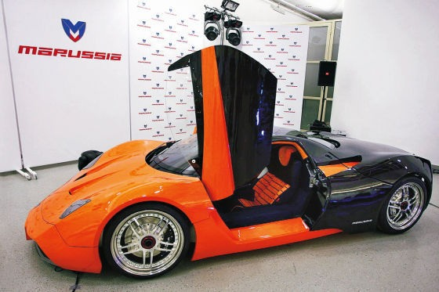
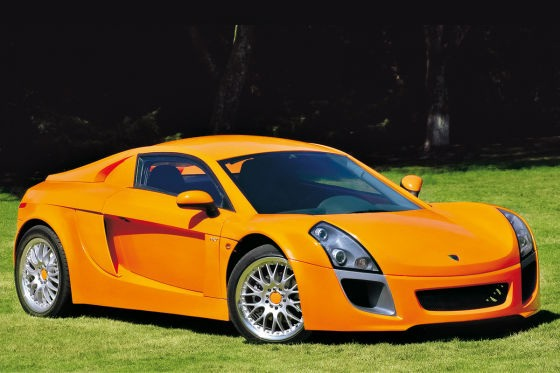
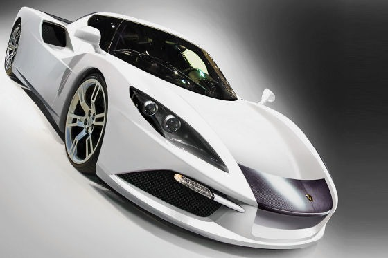

|
Avrupa'da birçok örneði var
Bugün dünyada bir otomobil fabrikasýnýn ortalama 150-200 bin adetlik üretim rakamýna ulaþmamasý halinde verimsizliði tartýþýlýyor. Bazý yerler kapatýlarak diðer fabrikalarýn bu konuma gelmesi saðlanýyor. Türkiye'de yapýlan üretimlerin hep yabancý ortakla bu büyüklüðe ulaþmýþ olmasýnýn altýnda bu gerçek yatýyor. Ancak bu gerçek Etox'un yola çýkmasýnýn önünde bir engel deðil. Otomobil dünyasýnda sadece dev markalar ayakta kalmýyor. Özellikle "niþ" olarak adlandýrýlan bazý sýnýflarda Avrupa'da onlarca farklý küçük markalar yaþýyor.



Pagani Zonda gibi yýlda 10 adet tamamen el üretimi araç ortaya çýkarýp bunu Ferrari, Lamborghini'den daha pahalýya satabilen þirketler var. Bu listeye Fisker, Spyker gibi markalarý eklemek mümkün. Ancak en ilginç olanlarýndan biri Ýsveçli Koenigsegg. Zira Saab markasýný GM'den satýn alan bu þirket yýlda sadece 15-20 adet super spor otomobil üretiyor. Oysa satýn aldýðý Saab'ýn yýllýk üretimi 100 bin civarýnda. Yani, Etox doðru bir konumlanma ile gayet baþarýlý bir Türk otomobil markasý olabilir, çok yüksek olmayan üretim rakamlarýna raðmen öne çýkabilir.
Kaynaklar:
- www.zaman.com.tr/haber.do?haberno=868404 > Etox Türk Ferrari'si olmak istiyor,
Memduh Taþlýcalý, ZAMAN, 12 Temmuz 2009
- www.hurriyet.com.tr/ekonomi/12038247.asp > Ýlk yerli spor otomobil için güçbirliði, Hürriyet, 10 Temmuz 2009
- www.hurriyet.com.tr/ekonomi/12003575.asp > Türk Ferrari'sinin ikincisi yollarda, Hürriyet, 4 Temmuz 2009
- www.osiad.org.tr/index.php?option=content&task=view&id=77 > 60 Yýllýk Hayal Gerçekleþiyor...
- www.autobild.de/artikel/etox-zafer_916536.html > Etox Zafer - Der Süpersportwagen - Sportscars, AUTO BILD, 08.06.2009
- www.bild.de/BILD/auto/2009/06/etox-zafer-test/diesel-sportwagen-tuerkei.html > Etox Zafer im Test > So fährt der Diesel-Sportwagen aus der Türkei, Bild.de, 06.2009
- www.etox.com.tr > Etox resmi sitesi
|